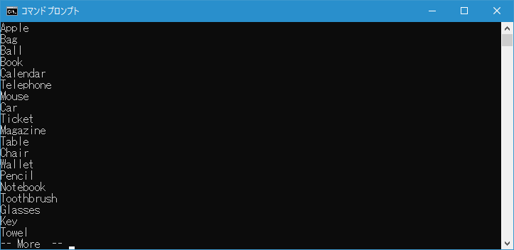

- Home ›
- コマンドプロンプトの使い方 ›
- 便利な入力機能
パイプを使いコマンドの出力を別のコマンドの入力へ渡す
コマンドプロンプトではパイプという機能を使ってコマンドを実行した結果として出力された値を、別のコマンドの入力として受け取ることができます。ここではパイプを使いコマンドの出力結果を別のコマンドの入力へ渡す方法について解説します。
目次
パイプの使い方
コマンドを実行した結果をさらに別のコマンドを使って処理したい場合があります。このような時に使用されるのがパイプです。書式は次の通りです。
コマンド1 | コマンド2
パイプは左側のコマンドが標準出力へ出力した内容を、右側のコマンドの標準入力へ渡します。右側のコマンドはその値を処理して標準出力へ実行した結果を出力します。
またパイプはつなげていくことが可能です。
コマンド1 | コマンド2 | コマンド3 | コマンド4
この場合、コマンド1の実行結果をコマンド2に渡し、そのコマンド2の実行結果をコマンド3へ渡し、最後にコマンド3の実行結果をコマンド4へ渡します。そしてコマンド4の実行結果が標準出力へ出力されます。
例えば「TYPE」コマンドの実行結果をパイプを使って「MORE」コマンドへ渡すことで、ファイルの内容を1画面ごとに停止して表示させるには次のように記述します。
type filename | more
-- --
では実際に試してみます。次のようなテキストファイルを用意しました。
「TYPE」コマンドを使ってファイルに内容を出力すると次のように表示されます。ファイルの記述された行数が多いため、1画面では収まらずにスクロールして表示されました。
それではパイプを使い「TYPE」コマンドの出力を別のコマンドである「MORE」コマンドの入力へ渡してみます。「MORE」コマンドは1画面毎にいったん表示を止めるコマンドです。
実行するとコマンドプロンプトの1画面内におさまるだけファイルの内容が出力されていったん止まります。

何かキーを入力すると、残りの部分が表示されます。
このようにパイプを利用することで、コマンドを実行した結果を別のコマンドの入力へと渡していくことができます。
-- --
コマンドプロンプトのパイプ機能を使ってパイプを使いコマンドの出力を別のコマンドの入力へ渡す方法について解説しました。
( Written by Tatsuo Ikura )

著者 / TATSUO IKURA
初心者～中級者の方を対象としたプログラミング方法や開発環境の構築の解説を行うサイトの運営を行っています。